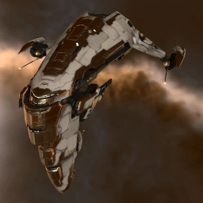

Maller

Тип корабля: Крейсер
Государство/Организация: Amarr
Примерная стоимость: 12.300.000 ISK
Описание
«Маллер», возможно, является самым прочным крейсером галактики и часто встречается в составе флотов Амаррской Империи. В основном он применяется в военных целях, но иногда используется и в частном секторе для сопровождения грузов высокой ценности.
Характеристики
Корпус
Запас прочности корпуса: 1.700 ед.
Вместимость грузового отсека: 480 м^3
Объем отсека для дронов: 15 м^3
Пропускная способность канала телеуправления: 15 Мбит/с
Масса: 13.150.000 кг
Занимает объем: 118.000,0 м^3 (10.000,0 м^3 в разобранном виде)
Влияние инертности конструкции: 0,476x
Сопротивление корпуса ЭМ-урону: 33 %
Сопротивление корпуса термальному урону: 33 %
Сопротивление корпуса кинетическому урону: 33 %
Сопротивление корпуса фугасному урону: 33 %
Броня
Запас прочности брони: 2.300 ед.
Сопротивление брони ЭМ-урону: 50 %
Сопротивление брони термальному урону: 35 %
Сопротивление брони кинетическому урону: 25 %
Сопротивление брони фугасному урону: 20 %
Щит
Запас прочности щита: 1.000 ед.
Влияние на время регенерации щитов: 20 минут и 50 секунд
Сопротивление щита ЭМ-урону: 0 %
Сопротивление щита термальному урону: 20 %
Сопротивление щита кинетическому урону: 40 %
Сопротивление щита фугасному урону: 50 %
Сопротивление средствам РЭП
Сопротивление накопителя нейтрализирующему воздействию: 0 %
Сопротивление воздействию генератору стазис-поля: 0 %
Сопротивление воздействию помех на наводку вооружения: 0 %
Накопитель энергии
Емкость накопителя: 1.625,0 ГДж
Время востановления заряда: 7 минут и 45 секунд
Целеуказания
Максимальная дальность захвата цели: 47,5 км
Максимальное количество захваченных целей: 6
Радиус сигнатуры: 130 м
Разрешающая способность систем захвата цели: 280 мм
Эффективность радарной системы: 16 ед.
Эффективность магнитнометрической системы: -
Эффективность гравиметрической системы: -
Эффективность ладарной системы: -
Двигательная установка
Максимальная скорость: 205 м/с
Скорость в варп-режиме: 4,0 а.е./с.
Служба оснащения
Мощность ЦПУ: 300,0 Тф
Мощность реактора: 1.150 МВт
Калибровка: 400 ед.
Точки монтажа орудийных установок: 5
Точки монтажа пусковых установок: -
Разъемы большой мощности: 5
Разъемы средней мощности: 3
Разъемы малой мощности: 6
Разъемы под установку тюнинг-модулей: 3